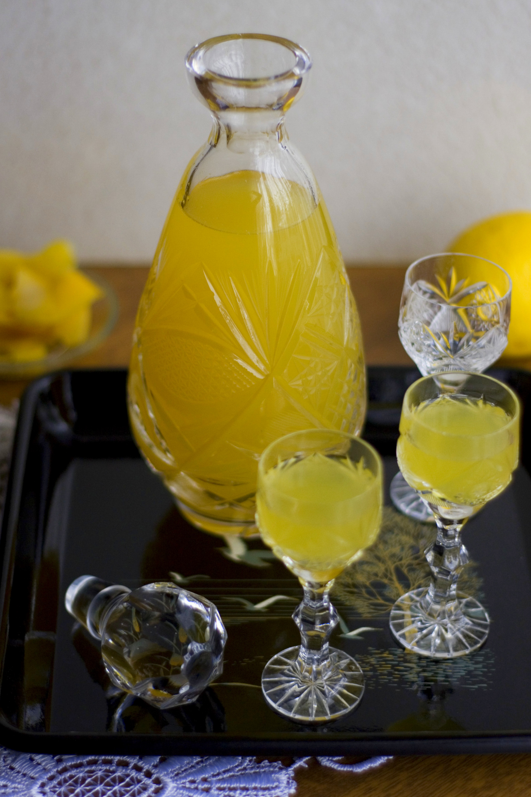

Cytrynowka

Przepis jest sprawdzony i godny polecenia a sama nalewka cytrynowa idealnie cytrusowa i słodka jednocześnie.
- idealny przepis na limoncello
- szybkie i proste wykonanie
- mozna je robic caly rok
Składniki
- 8-10 cytryn
- 1 szklanka wody
- 260 g cukru
- 500 ml spirytusu
- 250 ml wodki
Kroki:
- Obrac cytryny, pokroic i wycisnac sok
- Zagotowac sok z curkrem
- Wlac spirytus
- Sloik zamknac i odlozyc na parapet na dwa dni
- Przefiltrowac